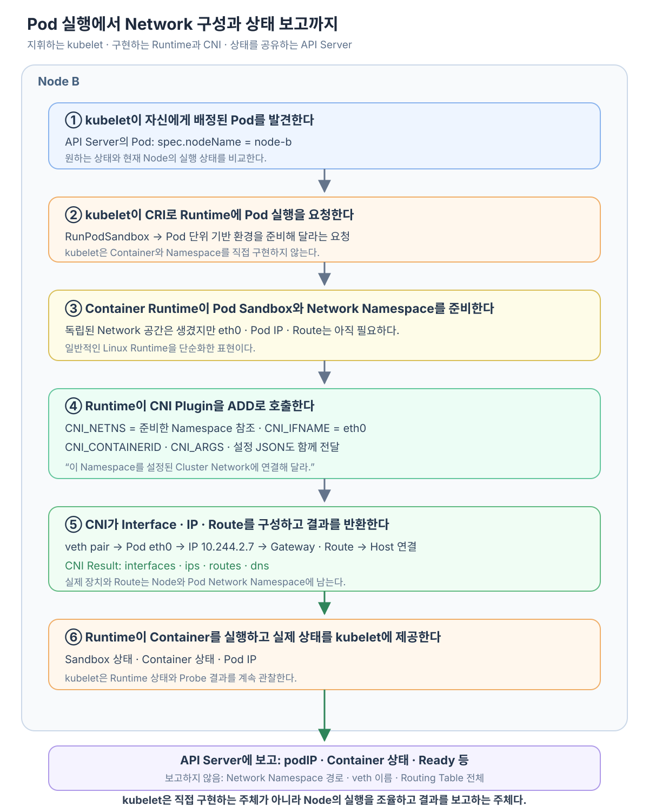

Pod가 특정 Node에 배정된 뒤 실제 Container와 Network는 누가 만드는 걸까? 이 과정을 처음 보면 kubelet이 Pod와 Network Namespace를 직접 만들고 그 사실을 API Server에 보고하는 것처럼 보이기 쉽다.
정확한 경계는 조금 다르다.
kubelet은 자기 Node에서 Pod의 원하는 상태를 실제 상태로 만드는 실행 관리자다. kubelet은 CRI를 통해 Container Runtime에 실행을 요청하고, 일반적인 구성에서는 Runtime이 Pod Sandbox와 Network Namespace를 준비한 뒤 CNI Plugin을 호출한다. kubelet은 그 결과에서 관찰한 Pod IP와 실행·준비 상태를 API Server에 보고한다.

이 글은 Linux Network Namespace와 veth를 사용하는 일반적인 Kubernetes Node를 기준으로 설명한다. Runtime이나 CNI 구현에 따라 내부 구조는 달라질 수 있지만 kubelet·CRI Runtime·CNI 사이의 책임 경계를 이해하는 데 필요한 핵심 흐름은 같다.
kubelet은 Node에서 원하는 상태와 실제 상태를 맞춘다
사용자나 Controller가 만든 Pod는 먼저 API Server에 저장된다. Scheduler가 실행할 Node를 선택하면 Pod 명세에 배치 결과가 기록된다.
Pod Object
spec.nodeName: node-b
Node B의 kubelet은 API Server를 관찰하다가 자신에게 배정된 Pod를 발견한다. 그리고 Pod 명세와 Node의 실제 실행 상태를 비교한다.
원하는 상태
Node B에서 model-server Pod가 실행돼야 함
현재 상태
아직 Pod Sandbox와 Container가 없음
kubelet의 판단
Runtime에 새 Pod 실행을 요청해야 함
따라서 kubelet은 Scheduler처럼 Node를 선택하는 구성요소가 아니다. 선택된 Node에서 Pod가 실제로 실행되도록 계속 조정하는 구성요소다. Container 시작 이후에도 Volume과 Secret 준비, Probe 실행, Container 재시작, 종료와 상태 보고에 관여한다.
이 역할들을 Container Runtime 호출 하나로만 이해하지 않고 Volume·Probe·상태 보고까지 넓혀 보고 싶다면 kubelet은 Node에서 무엇을 직접 하고 무엇을 조율할까?에서 kubelet의 전체 책임 범위를 살펴본다.
kubelet은 Container를 직접 만들지 않고 CRI로 요청한다
kubelet이 Pod 실행을 책임진다는 말이 kubelet Process가 Linux Namespace와 Container Process를 직접 만든다는 뜻은 아니다.
kubelet은 CRI(Container Runtime Interface)의 Client로서 containerd나 CRI-O 같은 Container Runtime에 요청한다. Pod를 처음 시작할 때 중요한 요청 중 하나가 RunPodSandbox다.
kubelet
→ CRI RunPodSandbox 요청
Container Runtime
→ Pod가 공유할 기반 실행 환경 준비
Pod Sandbox는 Pod에 속한 여러 Container가 공유할 격리 환경을 Runtime 관점에서 표현한 것이다. 일반적인 Linux Container Runtime에서는 Network Namespace 같은 Pod 단위 자원을 포함하지만, Sandbox를 반드시 특정 Linux Process 하나와 같은 것으로 생각할 필요는 없다. 가상 머신 기반 Runtime은 다른 방식으로 이 추상화를 구현할 수 있다.
Sandbox가 준비되면 Runtime은 그 안에 개별 Application Container를 만들고 시작할 수 있다.
Runtime은 Network Namespace를 준비한 뒤 CNI에 연결 작업을 요청한다
일반적인 Linux 구성에서 Runtime은 Pod가 사용할 Network Namespace를 준비한다. 하지만 빈 Network Namespace를 만드는 것만으로 Cluster Network가 완성되지는 않는다.
막 준비된 Network Namespace
→ 독립된 Network 공간은 있음
→ Cluster에서 사용할 eth0이 아직 필요함
→ Pod IP가 아직 필요함
→ Gateway와 Route가 아직 필요함
→ Host Network와 이어질 연결이 아직 필요함
이 연결 작업을 Network 구현에 맡기기 위해 Runtime 또는 Runtime의 Network 통합 계층이 Node에 설치된 CNI 설정을 읽고 CNI Plugin을 호출한다.
여기서 CNI는 kubelet과 직접 대화하는 중앙 Network Server를 뜻하지 않는다. Runtime이 Network 설정 프로그램을 어떤 입력과 출력 형식으로 호출할지 정한 표준 경계다.
CNI 호출은 준비된 Namespace를 Plugin에 넘기는 과정이다
새 Network 연결을 추가할 때 Runtime은 CNI Plugin을 ADD 명령으로 실행한다. 호출에는 대략 다음 정보가 들어간다.
환경 변수
CNI_COMMAND=ADD
CNI_CONTAINERID=<Pod Sandbox를 식별할 ID>
CNI_NETNS=<Runtime이 준비한 Network Namespace 참조>
CNI_IFNAME=eth0
CNI_ARGS=<Pod 이름·Namespace 등의 부가 정보>
CNI_PATH=<Plugin 실행 파일을 찾을 경로>
표준 입력
CNI Network 설정 JSON
가장 중요한 값은 CNI_NETNS와 CNI_IFNAME이다. 이를 풀어서 말하면 Runtime이 Plugin에 다음과 같이 요청하는 셈이다.
“이 Pod가 사용할 Network Namespace가 여기 있다.
그 안에 eth0이라는 Interface를 준비하고
설정된 Cluster Network에 연결해 달라.”
veth 기반 CNI 구현이라면 Plugin과 필요한 IPAM 기능이 다음 작업을 수행할 수 있다.
veth pair 생성
→ 한쪽 끝점을 Pod Network Namespace에 배치
→ Pod 쪽 끝점 이름을 eth0으로 설정
→ Pod IP와 Gateway·Route 설정
→ Host 쪽 끝점을 Bridge·Route·eBPF Datapath 등에 연결
CNI는 하나의 Plugin만 실행할 수도 있고 여러 Plugin을 순서대로 실행할 수도 있다. 예를 들어 기본 Interface를 만든 결과를 다음 Plugin이 받아 Port Mapping이나 추가 조정을 적용하는 식이다.
CNI Plugin이 성공하면 생성한 Interface, 할당한 IP, Route와 DNS 같은 결과를 JSON으로 Runtime에 반환한다. 실제 Interface와 Routing Table은 Node와 Pod Network Namespace에 남고, 결과 정보는 Runtime이 Sandbox의 Network 상태를 관리하는 데 사용한다.
veth와 Node 간 경로가 구체적으로 어떻게 준비되는지는 CNI는 Pod의 veth·IP·Route와 Node 간 경로를 어떻게 준비할까?에서 이어서 살펴본다.
Network 준비가 성공하면 Runtime이 Container를 실행한다
Runtime은 CNI 호출이 성공해 Pod Network가 준비된 뒤 그 Sandbox 안에 Application Container를 생성하고 시작한다.
kubelet의 Pod 실행 요청
→ Runtime이 Pod Sandbox 준비
→ Runtime이 Network Namespace 준비
→ Runtime이 CNI Plugin 호출
→ CNI가 Interface·IP·Route 구성
→ Runtime이 Application Container 생성·시작
이후 Application Container는 이미 준비된 Pod Network Namespace를 공유한다. Container 안의 Application은 CNI를 직접 호출하지 않고 일반적인 Socket과 eth0, Routing Table을 사용한다.
Network 구성에 실패하면 Runtime은 Sandbox 준비 실패를 kubelet에 반환한다. kubelet은 Pod가 정상 실행됐다고 보고하지 않으며, 재시도와 Event·상태 갱신을 통해 실패가 드러날 수 있다.
kubelet은 Runtime의 상태를 관찰해 API Server에 보고한다
kubelet은 Runtime에 실행 요청을 보낸 뒤 끝나는 것이 아니다. CRI를 통해 Pod Sandbox와 Container 상태를 계속 확인하고, Probe 결과와 함께 Kubernetes의 Pod 상태를 계산해 API Server에 갱신한다.
Container Runtime
→ Sandbox와 Container의 실제 상태 제공
kubelet
→ Runtime 상태와 Probe 결과 관찰
→ Kubernetes Pod 상태로 해석
→ API Server의 Pod status 갱신
예를 들어 다음과 같은 정보가 공유 상태에 반영될 수 있다.
Pod Object
spec.nodeName: node-b
status.podIP: 10.244.2.7
status.phase: Running
status.conditions:
- Initialized
- ContainersReady
- Ready
status.containerStatuses:
- 실행 상태
- Ready 여부
- 재시작 횟수
Pod IP가 생긴 시점과 Application이 요청을 받을 준비가 된 시점은 다를 수 있다. CNI 구성이 끝나 IP가 존재해도 Container가 시작되지 않았거나 Readiness Probe를 통과하지 못했다면 아직 Ready가 아닐 수 있다.
kubelet은 Network Namespace 자체를 API Server에 복사하지 않는다
“kubelet이 Network Namespace를 만들었다는 사실을 보고한다”는 표현은 절반만 맞다.
kubelet은 Pod Network 준비 결과를 반영한 상태를 보고하지만, Node 내부의 Linux Network 구성을 그대로 API Server에 올리지는 않는다.
| Node에만 남는 실제 구현 상태 | API Server에 보고되는 Kubernetes 상태 |
|---|---|
| Network Namespace 참조와 내부 구조 | Pod가 어느 Node에 배정됐는지 |
| veth 이름과 Interface Index | Pod IP |
| Pod 내부 Routing Table 전체 | Pod 실행 단계와 Condition |
| Host Route와 Netfilter Ruleset | Container 상태와 Ready 여부 |
즉, API Server에는 “이 Pod가 Node B에서 실행 중이며 IP는 10.244.2.7이고 현재 Ready다”와 같은 공유 가능한 상태가 기록된다. 실제 veth와 Route를 확인하려면 해당 Node와 Pod의 Network Namespace를 조사해야 한다.
보고된 상태는 다른 구성요소의 입력이 된다
kubelet의 보고는 단순한 화면 표시용 정보가 아니다. API Server를 공통 상태 저장 경계로 사용하므로 다른 구성요소가 그 변화를 관찰할 수 있다.
Node B의 kubelet
→ Pod IP·Ready 상태 보고
API Server의 Pod 상태 갱신
→ EndpointSlice Controller가 Pod·Service 관계 재계산
EndpointSlice 갱신
→ 각 Node의 kube-proxy가 변경 관찰
각 Node
→ 로컬 Service 전달 규칙 갱신
따라서 Node B에서 만들어진 로컬 Network 결과가 veth 자체의 형태로 다른 Node에 복제되는 것은 아니다. Pod IP와 준비 상태가 Kubernetes 객체로 공유되고, Controller와 kube-proxy가 그 의미를 각자 필요한 로컬 상태로 다시 바꾼다.
이후 이 Pod 상태가 Service의 Endpoint가 되고, 각 Node의 Service 규칙과 CNI 경로로 이어지는 전체 과정은 새로 생성된 Pod는 어떻게 Cluster 전체에서 접근 가능해질까?에서 계속 따라갈 수 있다.
역할을 한 문장씩 구분하면 흐름이 선명해진다
| 구성요소 | 이 과정에서의 책임 |
|---|---|
| Scheduler | 아직 배정되지 않은 Pod가 실행될 Node를 선택한다. |
| kubelet | 자기 Node에 배정된 Pod의 원하는 상태와 실제 상태를 맞추고 결과를 보고한다. |
| Container Runtime | CRI 요청을 받아 Pod Sandbox와 Container 생명주기를 구현한다. |
| CNI Plugin | Runtime이 넘긴 Network Namespace를 Cluster Network에 연결한다. |
| API Server | 선언과 관찰 상태를 구성요소들이 읽고 쓸 수 있는 공통 경계로 제공한다. |
핵심은 kubelet을 모든 작업의 직접 구현자로 보지 않는 것이다. kubelet은 API Server의 선언을 읽고 Runtime·Volume·Probe 같은 Node 기능을 조율하며, 관찰한 결과를 다시 Kubernetes 상태로 보고하는 Node의 실행 관리자다.